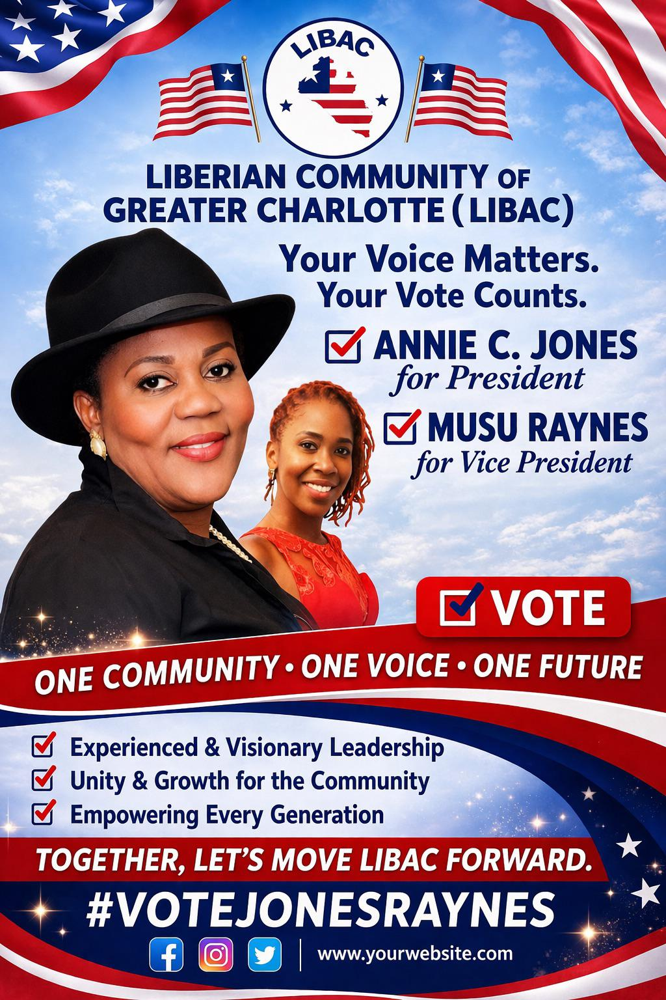
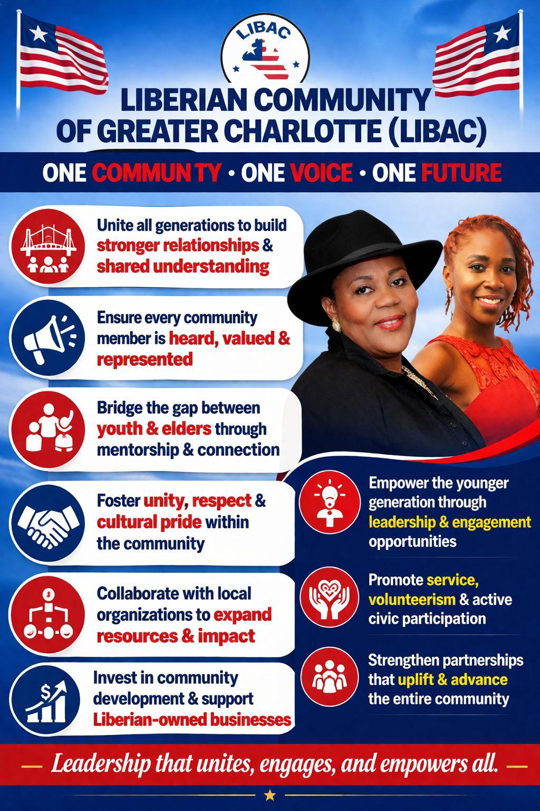
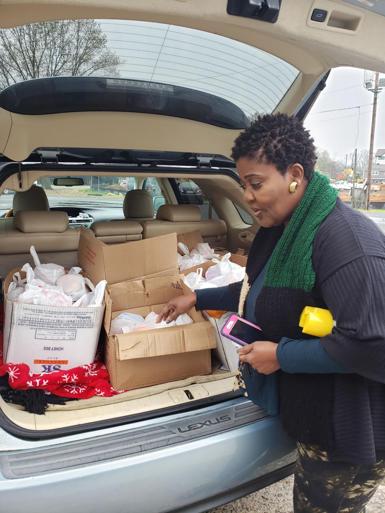
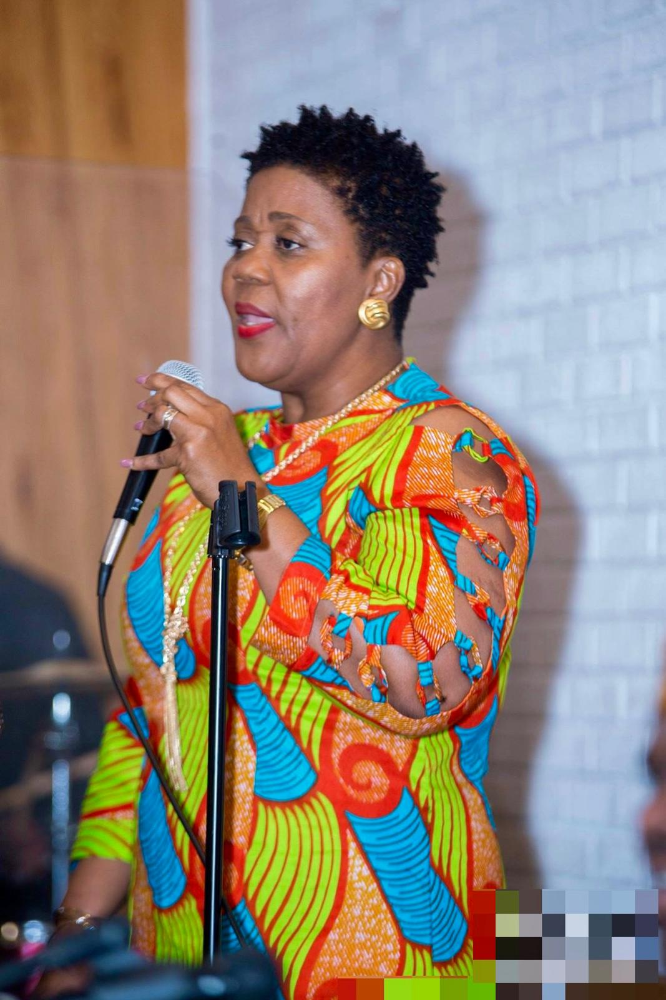
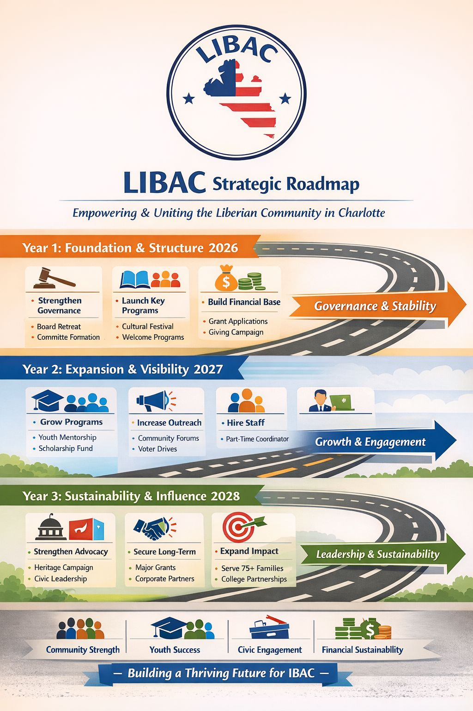
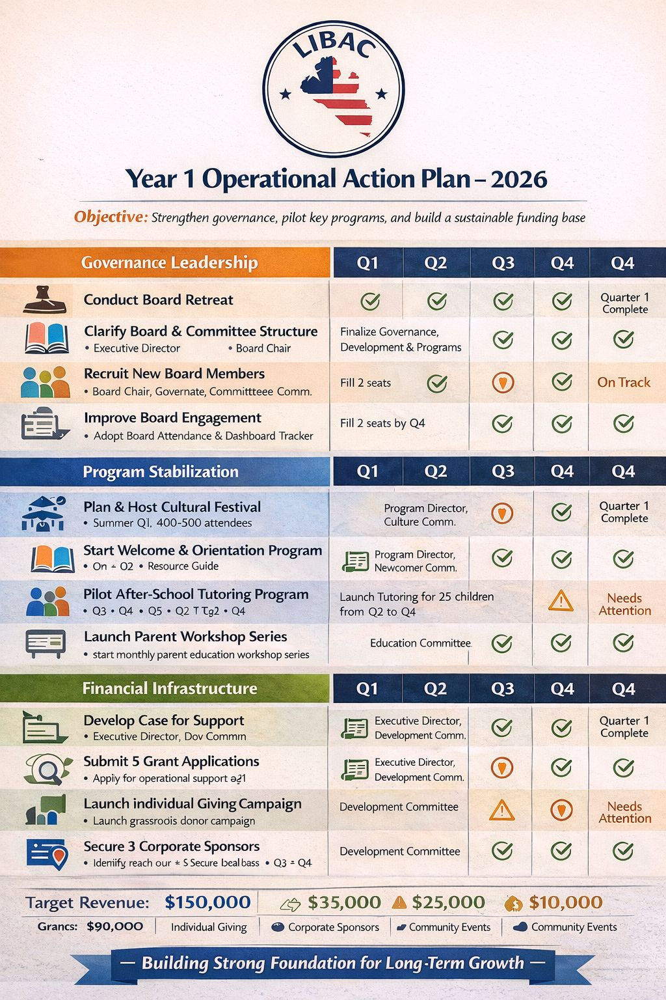

ONE COMMUNITY- ONE VOICE- ONE FUTURE

Leadership that unites, engages, and empowers all.

Annie C. Jones, affectionately known throughout the community as Mother Jones,is a servant leader and a proud daughter of Plebo, Maryland County, Liberia, whose life reflects a deep commitment to faith, service, and unity. Her influence extends far beyond titles, she is widely recognized as a nurturer, a connector, and a steady force within the Liberian Community Association of Greater Charlotte (LIBAC). Currently serving as a Board Member of LIBAC, Annie has been instrumental in supporting and executing nearly every major initiative within the organization. Her hands-on approach, reliability, and heart for service have made her a key pillar in ensuring the success of community programs and events. She does not simply participate, she shows up, she works, and she delivers. Her leadership was especially evident during the COVID-19 pandemic, where Annie demonstrated true servant leadership by putting her own safety aside to support families in need. She helped coordinate and deliver food directly to community members, partnered with local nonprofits to expand outreach, and played a key role in connecting LIBAC to Crisis Ministry and initiatives led by the First Lady providing clothing, baby supplies, and essential items for the elderly. In one of the most challenging times, Annie didn’t step back she stepped up. Known as “Mother Jones,” Annie truly embodies that name. While she is a proud mother of two and grandmother to one cherished grandson, she has also opened her home and heart as a foster parent, raising a foster son and extending her love to countless children within the community. She is a godmother and mentor to many, and her ability to nurture, uplift, and bring people together has made her a trusted and beloved figure across generations. Annie is deeply passionate about youth development and community collaboration. For the past four years, she has helped connect the community with partner organizations to host the annual F4F Tennis Event, promoting health, mentorship, and active engagement among young people. She believes strongly in the power of partnership and continues to build bridges that create meaningful opportunities for families and youth. Her commitment to advocacy is equally impactful. Annie has played a role in connecting the Liberian community with local lawmakers, ensuring that the voices of Liberians in Charlotte are heard and represented at the city level. She understands that a strong community must also have a strong voice. Her service has not gone unnoticed. Annie is a 2025 Annie T. Doe Memorial Foundation Community Service Award Honoree and a 2025 Liberian Organization of the Piedmont Humanitarian and Social Services Award Honoree. She was also recognized as Mother of the Year in 2018 at North Davidson United Methodist Church, where she continues to serve faithfully as a Lay Servant. Professionally, Annie works as a Rehabilitation Counselor, dedicating her career to helping individuals overcome life’s challenges and achieve independence. She is also a former kindergarten teacher, reflecting her lifelong commitment to nurturing and empowering others. Her passion is to serve and her vision is to lead with humility, by listening first. She believes in bringing everyone to the table, fostering inclusion, and working collectively toward a stronger, more united community. As she steps forward as a candidate for President of LIBAC, Annie brings not only experience, but heart, action, and a proven record of service, ready to lead the community toward a future rooted in unity, collaboration, and purpose.
Musu Raynes is a devoted wife, mother of four, and a seasoned real estate professional with over 20 years of industry experience. She is the Co-Owner and Founder of MNT Real Estate Inc., a Charlotte, North Carolina–based real estate and property management firm committed to excellence and community impact. Throughout her career, Musu has been dedicated to expanding access to affordable housing and empowering individuals and families—particularly first-time homebuyers—on their journey to homeownership. Her passion for service and advocacy is reflected not only in her professional work but also in her community involvement. Musu is a member of North Davidson United Methodist Church and serves as a manager with Piedmont Airlines. She holds a degree in Mathematics and is a proud and active member of Zeta Phi Beta Sorority, Incorporated, where she continues to exemplify leadership, service, and sisterhood. In addition, she serves as a Board Member of the Annie T. Doe Memorial Foundation and Board Chairlady of the HELP Foundation, where she plays a vital role in advancing initiatives that uplift and support underserved communities. Musu lives by the belief: “There comes a time when one cannot just talk the talk but also walk the walk.” Guided by this principle, she remains committed to using her experience and passion to expand access to resources and opportunities for others.

I am running for President of the Liberian Community because I believe in the power of unity, service, and representation. Over the years, I have witnessed both the challenges and the remarkable strengths within our community here in Charlotte. We are a people rich in culture, resilience, and potential and to move forward, we must be intentional about coming together, amplifying our voices, and creating opportunities for every generation.
My vision is to build a community where our elders feel respected, our youth feel empowered, and our families feel supported. I plan to promote programs that celebrate our culture, advance education, strengthen Liberian-owned businesses, and foster meaningful connections with other communities in Charlotte so that the Liberian community is seen, heard, and valued for the contributions we bring.
This role is not about position it’s about service. I am committed to listening, being transparent, and leading with integrity. Together, we can build a stronger, more united, and more vibrant Liberian community for the generations to come.

Mother Annie Jones Strategic Roadmap that she will present to the Board.

Our 1 year Operational Action plan....
123 Campaign Road, Charlotte, NC 28202
Phone:+1(347 858 4661)
Email: info@liberiancampaign.org